## loading the exact wavefunction ##
with open('data_exact2_clusterN15.pkl', 'rb') as f:
data_exact = pickle.load(f)
wave_fcts = data_exact['wave_fcts']Cluster Ising model
This notebook presents how to use QDisc to reproduce the results on the classical shadows of the cluster Ising model. Its Hamiltoinian is given by
\[ H_{\mathrm{cluster}} = -\sum_{i=1}^{N} \sigma^z_{i-1} \sigma^x_i \sigma^z_{i+1} - h_1 \sum_{i=1}^{N} \sigma^x_i -h_2 \sum_{i=1}^{N-1}\sigma_i^x\sigma_{i+1}^x \]
where \(\sigma^x_i,\sigma^y_i,\sigma^z_i\) are Pauli operators acting on site \(i\). We consider open boundary conditions defined by \(\sigma^z_0 = \sigma^z_{N+1} = \mathbb{1}\). We sweep the transverse-like field \(h_1\in[0.05,\,1.20]\) and the Ising coupling \(h_2\in[-1.5,\,1.5]\) to probe the competition between the cluster term, the transverse-field (paramagnetic) term, and nearest-neighbor Ising correlations.
dataset and training
The dataset is produced by first computing the exact ground state wavefunction using Netket, similar to the J1J2 model (see tutorial). Then, classical shadows are generated by randomly sampling the Paulis and their respective outcomes using the probabilities given by the wavefunction. This is done using the get_classical_shadow() function from QDisc.dataset.
## generating classical shadows across the parameter space ##
from qdisc.dataset.core import get_classical_shadow
N = 15
all_h1 = jnp.arange(0.05, 1.25, 0.05)
all_h2 = jnp.arange(-1.5, 1.5, 0.1)
num_sample_per_params = 2000
data = jnp.zeros([jnp.size(all_h1), jnp.size(all_h2), num_sample_per_params, 2*N])
key = jax.random.PRNGKey(12345)
wave_fcts = data_exact['wave_fcts']
for i, h1 in enumerate(all_h1):
for j, h2 in enumerate(all_h2):
key, subkey = jax.random.split(key)
s = get_classical_shadow(psi=wave_fcts.astype('float32')[i,j], num_shots=num_sample_per_params, N=15, rng_key=subkey)
data = data.at[i,j].set(s)
data = data.astype('int32')## casting everything in a QDisc Dataset object ##
from qdisc.dataset.core import Dataset
dataset = Dataset(data=data, thetas=[all_h1, all_h2], data_type='shadow', local_dimension=2, local_states=jnp.array([0,1]))## We use the transformer architecture for the encoder and decoder ##
from qdisc.nn.core import Transformer_encoder
from qdisc.nn.core import Transformer_decoder
from qdisc.vae.core import VAEmodel
encoder = Transformer_encoder(latent_dim=5, d_model=16, num_heads=2, num_layers=3, data_type='shadow')
decoder = Transformer_decoder(d_model=32, num_heads=4, num_layers=3, data_type='shadow')
myvae = VAEmodel(encoder=encoder, decoder=decoder)## Training ##
from qdisc.vae.core import VAETrainer
myvaetrainer = VAETrainer(model=myvae, dataset=dataset)
key = jax.random.PRNGKey(67483)
num_epochs = 1000
myvaetrainer.train(num_epochs=num_epochs, batch_size=10000, beta=0.65, gamma=0., key=key, printing_rate=50, re_shuffle=True)Start training...
epoch=0 step=0 loss=12.347687967698652 recon=10.325565010988841
logvar=[-0.33022366 0.0294409 0.55953395 0.33956828 -0.45126546]
epoch=50 step=0 loss=6.487059499221326 recon=2.747702826860476
logvar=[ 1.60891616e-03 -3.79395645e+00 -5.48110009e+00 -2.10693801e+00
5.09911842e-03]
epoch=100 step=0 loss=6.315230991856255 recon=2.176506179580368
logvar=[-2.18324061e-04 -4.26282124e+00 -5.74415987e+00 -2.89566177e+00
4.52455450e-04]
epoch=150 step=0 loss=6.351402070119837 recon=2.0416517952765454
logvar=[-5.49586326e-03 -4.39419643e+00 -5.77676345e+00 -3.12499072e+00
-1.05409432e-03]
epoch=200 step=0 loss=6.185613846957846 recon=1.7170996274912897
logvar=[-1.38495516e-03 -4.54206555e+00 -5.94358400e+00 -3.26664121e+00
-4.34269675e-03]
epoch=250 step=0 loss=6.050364744366315 recon=1.5615449391153347
logvar=[-1.69562970e-03 -4.60882494e+00 -5.98703399e+00 -3.21580383e+00
-2.02698014e-03]
epoch=300 step=0 loss=6.036482538330654 recon=1.4641840750033226
logvar=[-3.20047955e-03 -4.75379596e+00 -6.11155958e+00 -3.27105191e+00
-3.88773909e-03]
epoch=350 step=0 loss=5.979178257724279 recon=1.36887668916349
logvar=[-3.00514521e-03 -4.81439014e+00 -6.02593182e+00 -3.20735086e+00
3.48975305e-04]
epoch=400 step=0 loss=6.009092607946348 recon=1.3728353644820985
logvar=[-4.44492938e-03 -4.86656668e+00 -6.14489616e+00 -3.26099531e+00
-1.30218320e-03]
epoch=450 step=0 loss=6.0220570107792675 recon=1.3389792237164384
logvar=[-1.68795052e-03 -4.92355700e+00 -6.21856915e+00 -3.31008028e+00
-2.30367859e-03]
epoch=500 step=0 loss=5.878122122223036 recon=1.1998018678705789
logvar=[-1.78353210e-03 -4.95608013e+00 -6.17991373e+00 -3.31688653e+00
-8.28107691e-04]
epoch=550 step=0 loss=5.8924336223879115 recon=1.1629692225343342
logvar=[ 1.08417498e-03 -4.99906500e+00 -6.19032347e+00 -3.34672249e+00
-1.57586230e-03]
epoch=600 step=0 loss=5.869670156405646 recon=1.1941889331655504
logvar=[-4.22815722e-03 -4.98837830e+00 -6.16033137e+00 -3.33722931e+00
-1.55730017e-03]
epoch=650 step=0 loss=5.886251256088388 recon=1.1376111060560081
logvar=[ 5.63655146e-04 -4.94382154e+00 -6.10970727e+00 -3.32718383e+00
1.95764407e-03]
epoch=700 step=0 loss=5.899222298427608 recon=1.1503704721551113
logvar=[-6.42165385e-05 -4.99184416e+00 -6.17988897e+00 -3.41264614e+00
-2.59477361e-03]
epoch=750 step=0 loss=5.91955405139542 recon=1.1814203181427434
logvar=[-1.18126475e-03 -4.99585559e+00 -6.15080361e+00 -3.34256863e+00
2.21841012e-05]
epoch=800 step=0 loss=5.8189250483184525 recon=1.130771261113764
logvar=[ 2.39445420e-03 -4.95950694e+00 -6.15326103e+00 -3.38301455e+00
-1.38216248e-03]
epoch=850 step=0 loss=5.81849541244368 recon=1.1504030272990962
logvar=[-8.11978773e-04 -4.94414587e+00 -6.05133513e+00 -3.36805270e+00
-1.21090328e-03]
epoch=900 step=0 loss=5.801429250694841 recon=1.0742724399110732
logvar=[ 1.54916973e-03 -4.97436513e+00 -6.08436959e+00 -3.45073402e+00
1.43229962e-03]
epoch=950 step=0 loss=5.78974498377786 recon=1.0764884790490885
logvar=[-1.32754115e-03 -4.94436411e+00 -6.00759037e+00 -3.45056866e+00
-1.69056105e-03]
Training finished.#load the trained model
from qdisc.vae.core import VAETrainer
with open('clusterIsingN15_data_cpVAE2_QDisc.pkl', 'rb') as f:
all_data = pickle.load(f)
myvaetrainer = VAETrainer(model=myvae, dataset=dataset)
myvaetrainer.init_state(jax.random.PRNGKey(0), dataset.data[0,0])
myvaetrainer.state = myvaetrainer.state.replace(params=all_data['params'])
num_epochs = 1000
myvaetrainer.history_recon = all_data['history_recon']
myvaetrainer.history_logvar = all_data['history_logvar']## plot the training ##
myvaetrainer.plot_training(num_epochs = num_epochs)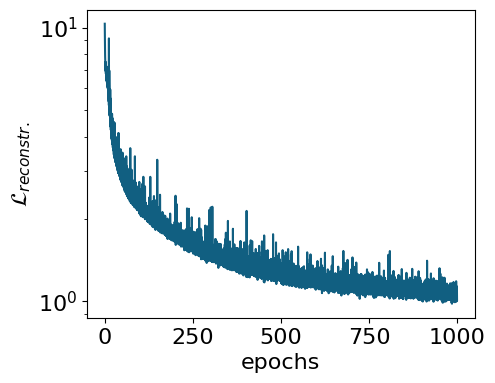
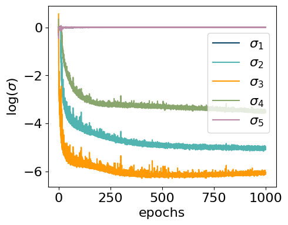
## compute and plot the representation ##
myvaetrainer.compute_and_plot_repr2d(subplot=False)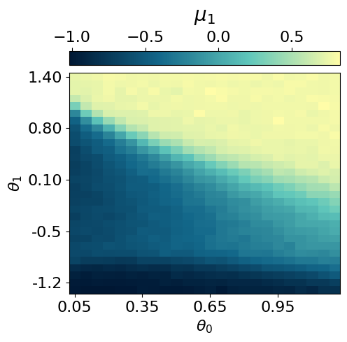
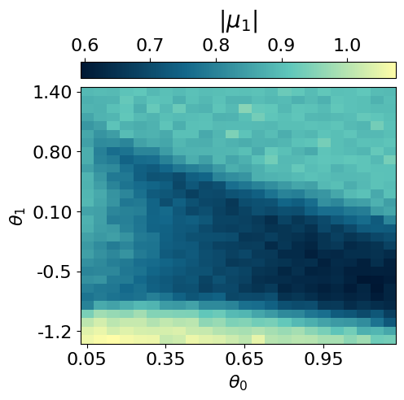
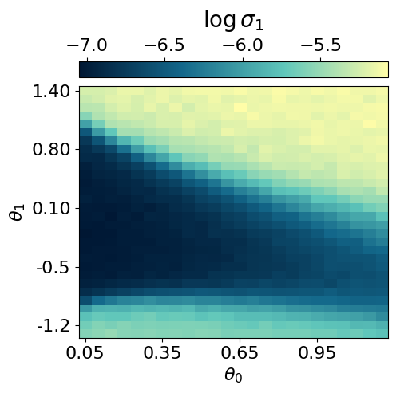
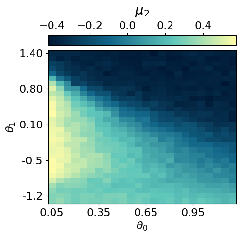
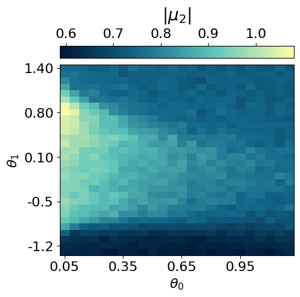
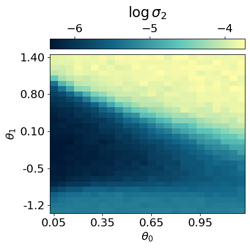
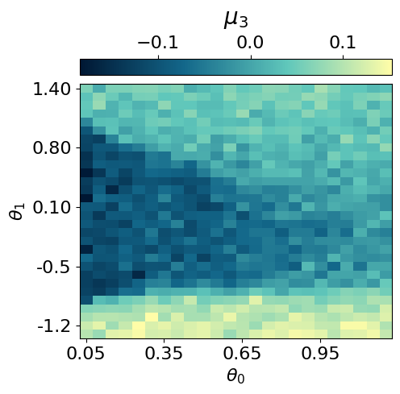
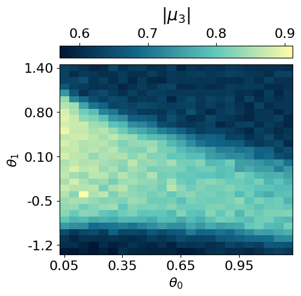
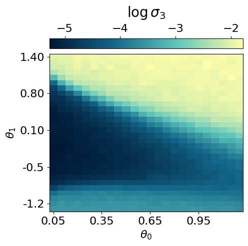
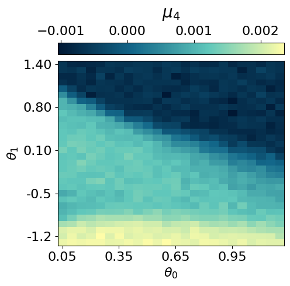
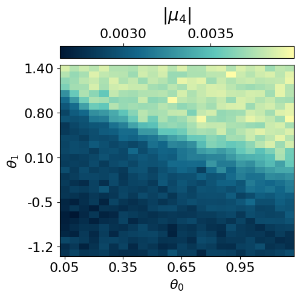
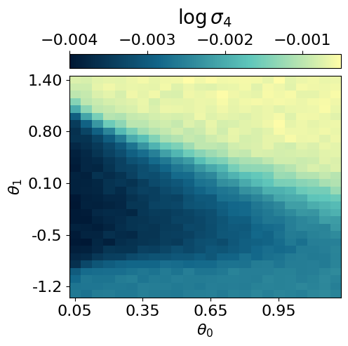
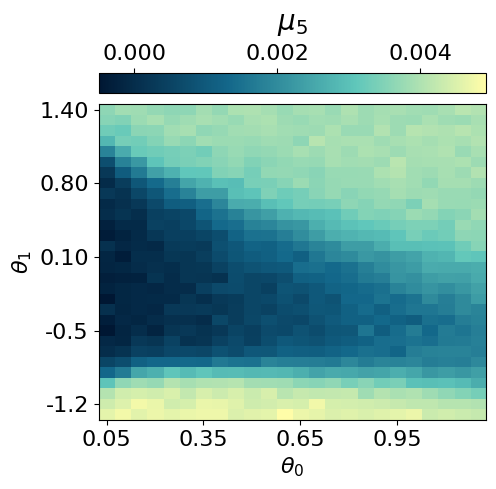
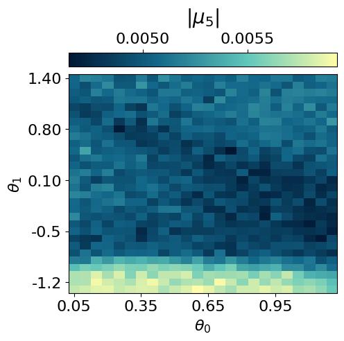
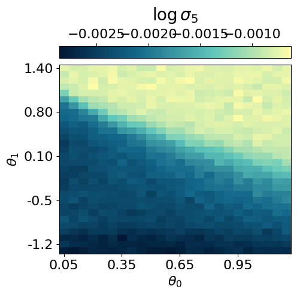
# or plot using subplots (more compact)
myvaetrainer.plot_repr2d(subplot=True)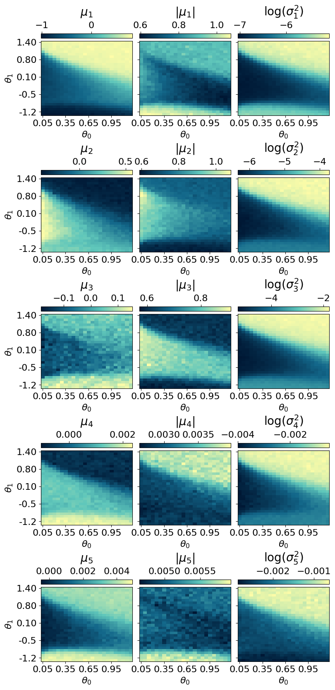
all_data = myvaetrainer.get_data()
with open('clusterIsingN15_data_cpVAE2_QDisc.pkl', 'wb') as f:
pickle.dump(all_data, f)Reconstruction of physical quantities
In this section, we analyze how the cpVAE can reconstruct physical quantities, such as energy and stabilizers. We first reconstruct each shadows and then compute the Median-of-means estimate of the various observables.
## shadows reconstruction, from testset random measurements ##
# generate random measurement
N = 15
all_h1 = jnp.arange(0.05, 1.25, 0.05)
all_h2 = jnp.arange(-1.5, 1.5, 0.1)
num_sample_per_params = 2000
test_data = jnp.zeros([jnp.size(all_h1), jnp.size(all_h2), num_sample_per_params, 2*N])
key = jax.random.PRNGKey(7654)
wave_fcts = data_exact['wave_fcts']
for i, h1 in enumerate(all_h1):
for j, h2 in enumerate(all_h2):
#we dont need the measurement output but just the random basis. Easier to just use the function already inplemented and ignore the output
key, subkey = jax.random.split(key)
s = get_classical_shadow(psi=wave_fcts.astype('float32')[i,j], num_shots=num_sample_per_params, N=15, rng_key=subkey)
test_data = test_data.at[i,j].set(s)
test_data = test_data.astype('int32')
# use the decoder to predict the outcomes of each shadows
key = jax.random.PRNGKey(347856)
S_reconstructed = jnp.zeros_like(test_data)
for i, h1 in enumerate(all_h1):
for j, h2 in enumerate(all_h2):
d = test_data[i,j]
key, subkey = jax.random.split(key)
s = myvaetrainer.reconstruct_sample(d, subkey)
S_reconstructed = S_reconstructed.at[i,j].set(s)## estimate of the energy ##
@jax.jit
def sqe_cal_energy(sqe: jnp.ndarray,
J_cluster: float,
h1: float,
h2: float) -> jnp.ndarray:
"""
Estimate ⟨H⟩ from a batch of classical‐shadows `sqe` of shape (T, 2*num_bits),
where columns alternate (basis, outcome), with basis encoded {X→2, Y→3, Z→4}
and outcome ∈ {0,1}. Returns the average energy over the batch.
"""
# split into per‐site basis and outcome
basis = sqe[:, 0::2] # shape (T, num_bits)
outcome = sqe[:, 1::2] # shape (T, num_bits)
# single‐shot estimators: ±3 for X and Z, zero otherwise
expX = jnp.where(basis == 2,
jnp.where(outcome == 1, +3.0, -3.0),
0.0)
expZ = jnp.where(basis == 4,
jnp.where(outcome == 1, +3.0, -3.0),
0.0)
# two‐site and three‐site terms
expXX = expX[:, :-1] * expX[:, 1:] # shape (T, num_bits-1)
expZXZ = expZ[:, :-2] * expX[:, 1:-1] * expZ[:, 2:] # shape (T, num_bits-2)
# sums per snapshot
sumZXZ = expZXZ.sum(axis=1) # (T,)
sumX = expX.sum(axis=1) # (T,)
sumXX = expXX.sum(axis=1) # (T,)
# instantaneous energies, then mean over T
energies = -sumZXZ * J_cluster - sumX * h1 - sumXX * h2
return energies.mean()
def MoM_energy(J_cluster: float,
h1: float,
h2: float,
sqe: jnp.ndarray,
num_parts: int) -> jnp.ndarray:
"""
Median‐of‐means estimate of ⟨H⟩ from shadows `sqe` of shape (T, 2*num_bits),
partitioned into `num_parts` blocks of equal size.
"""
T = sqe.shape[0]
part_size = T // num_parts
if part_size * num_parts != T:
raise ValueError(f"T={T} not divisible by num_parts={num_parts}")
# compute block‐means
means = []
for k in range(num_parts):
block = sqe[k*part_size:(k+1)*part_size]
means.append(sqe_cal_energy(block, J_cluster, h1, h2))
means = jnp.stack(means) # (num_parts,)
# return the median of the block‐means
return jnp.median(means)energy_from_dataset = jnp.zeros((len(all_h1),len(all_h2)))
for i, h1 in enumerate(all_h1):
for j, h2 in enumerate(all_h2):
energy_from_dataset = energy_from_dataset.at[i,j].set(MoM_energy(J_cluster=1.0, h1=h1, h2=h2, sqe=dataset.data[i,j], num_parts=10))
energy_recon = jnp.zeros((len(all_h1),len(all_h2)))
for i, h1 in enumerate(all_h1):
for j, h2 in enumerate(all_h2):
energy_recon = energy_recon.at[i,j].set(MoM_energy(J_cluster=1.0, h1=h1, h2=h2, sqe=S_reconstructed[i,j], num_parts=10))exact_energies = data_exact['energies']
#energy_from_dataset = clusterIsingN15_VAE2_reconstruction['energy_from_dataset']
#energy_recon = clusterIsingN15_VAE2_reconstruction['energy_recon']
energy_max = jnp.max(jnp.array([jnp.max(exact_energies),jnp.max(energy_from_dataset),jnp.max(energy_recon)]))
energy_min = jnp.min(jnp.array([jnp.min(exact_energies),jnp.min(energy_from_dataset),jnp.min(energy_recon)]))
plt.rcParams['font.size'] = 16
plt.figure(figsize=(7,5),dpi=100)
plt.imshow(jnp.rot90(exact_energies),cmap=cmap_green3, vmin=energy_min, vmax=energy_max)
plt.colorbar()
plt.title(r'Exact energy')
plt.xlabel(r'$h_1$')
plt.ylabel(r'$h_2$')
plt.xticks([0,10,20], [0,0.5,1])
plt.yticks([5,15,25], [-1,0,1])
plt.show()
plt.rcParams['font.size'] = 16
plt.figure(figsize=(7,5),dpi=100)
plt.imshow(jnp.rot90(energy_from_dataset),cmap=cmap_green3, vmin=energy_min, vmax=energy_max)
plt.colorbar()
plt.title(r'Dataset energy')
plt.xlabel(r'$h_1$')
plt.ylabel(r'$h_2$')
plt.xticks([0,10,20], [0,0.5,1])
plt.yticks([5,15,25], [-1,0,1])
plt.show()
plt.rcParams['font.size'] = 16
plt.figure(figsize=(7,5),dpi=100)
plt.imshow(jnp.rot90(energy_recon),cmap=cmap_green3, vmin=energy_min, vmax=energy_max)
plt.colorbar()
plt.title(r'Recon. energy')
plt.xlabel(r'$h_1$')
plt.ylabel(r'$h_2$')
plt.xticks([0,10,20], [0,0.5,1])
plt.yticks([5,15,25], [-1,0,1])
plt.show()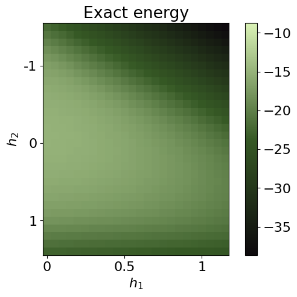
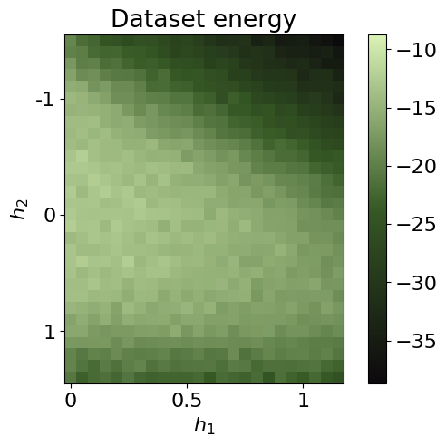
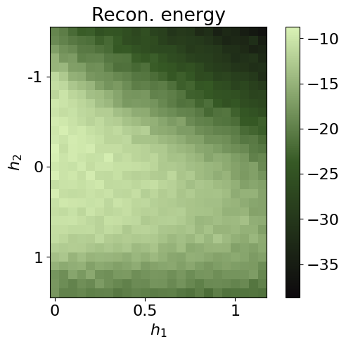
energies = {}
energies['exact'] = exact_energies
energies['dataset'] = energy_from_dataset
energies['recon'] = energy_recon
data['energies'] = energies## same for the stabilizers ##
@jax.jit
def sqe_cal_stab(sqe: jnp.ndarray) -> jnp.ndarray:
# split into per‐site basis and outcome
basis = sqe[:, 0::2] # shape (T, num_bits)
outcome = sqe[:, 1::2] # shape (T, num_bits)
expX = jnp.where(basis == 2,
jnp.where(outcome == 1, +3.0, -3.0),
0.0)
expZ = jnp.where(basis == 4,
jnp.where(outcome == 1, +3.0, -3.0), #3 for unbiased estim (see classical shadows th.)
0.0)
all_ZX_XZ = []
for i in range(2,N):
expZX_XZ = expZ[:, :-i]
for j in range(1,i):
expZX_XZ = expZX_XZ * expX[:, j:-i+j]
expZX_XZ = expZX_XZ * expZ[:, i:]
#sums per samples
ZX_XZ = expZX_XZ.sum(axis=1).mean()
all_ZX_XZ.append(ZX_XZ)
all_ZX_XZ = jnp.array(all_ZX_XZ) # shape
return all_ZX_XZ
def MoM_stab(sqe: jnp.ndarray,
num_parts: int) -> jnp.ndarray:
"""
Median‐of‐means estimate of ⟨H⟩ from shadows `sqe` of shape (T, 2*num_bits),
partitioned into `num_parts` blocks of equal size.
"""
T = sqe.shape[0]
part_size = T // num_parts
if part_size * num_parts != T:
raise ValueError(f"T={T} not divisible by num_parts={num_parts}")
# compute block‐means
means = []
for k in range(num_parts):
block = sqe[k*part_size:(k+1)*part_size]
means.append(sqe_cal_stab(block))
means = jnp.stack(means) # (num_parts,k)
# return the median of the block‐means
return jnp.median(means, axis=0)stab_dataset = jnp.zeros((len(all_h1),len(all_h2),N-2))
for i, h1 in enumerate(all_h1):
for j, h2 in enumerate(all_h2):
stab = MoM_stab(sqe=dataset.data[i,j], num_parts=10)
stab_dataset = stab_dataset.at[i,j].set(stab)
stab_recon = jnp.zeros((len(all_h1),len(all_h2),N-2))
for i, h1 in enumerate(all_h1):
for j, h2 in enumerate(all_h2):
stab = MoM_stab(sqe=S_reconstructed[i,j], num_parts=10)
stab_recon = stab_recon.at[i,j].set(stab)
plt.rcParams['font.size'] = 16
plt.figure(figsize=(7,5),dpi=100)
plt.imshow(jnp.rot90(stab_dataset[...,0]),cmap=cmap_brown, vmin=0, vmax=N)
plt.colorbar()
plt.title(r'Dataset ZXZ stab')
plt.xlabel(r'$h_1$')
plt.ylabel(r'$h_2$')
plt.xticks([0,10,20], [0,0.5,1])
plt.yticks([5,15,25], [-1,0,1])
plt.show()
plt.rcParams['font.size'] = 16
plt.figure(figsize=(7,5),dpi=100)
plt.imshow(jnp.rot90(stab_recon[...,0]),cmap=cmap_brown, vmin=0, vmax=N)
plt.colorbar()
plt.title(r'Reconstr. ZXZ stab')
plt.xlabel(r'$h_1$')
plt.ylabel(r'$h_2$')
plt.xticks([0,10,20], [0,0.5,1])
plt.yticks([5,15,25], [-1,0,1])
plt.show()
plt.rcParams['font.size'] = 16
plt.figure(figsize=(7,5),dpi=100)
plt.imshow(jnp.rot90(stab_dataset[...,1]),cmap=cmap_brown)
plt.colorbar()
plt.title(r'Dataset ZXXZ stab')
plt.xlabel(r'$h_1$')
plt.ylabel(r'$h_2$')
plt.xticks([0,10,20], [0,0.5,1])
plt.yticks([5,15,25], [-1,0,1])
plt.show()
plt.rcParams['font.size'] = 16
plt.figure(figsize=(7,5),dpi=100)
plt.imshow(jnp.rot90(stab_recon[...,1]),cmap=cmap_brown)
plt.colorbar()
plt.title(r'Reconstr. ZXXZ stab')
plt.xlabel(r'$h_1$')
plt.ylabel(r'$h_2$')
plt.xticks([0,10,20], [0,0.5,1])
plt.yticks([5,15,25], [-1,0,1])
plt.show()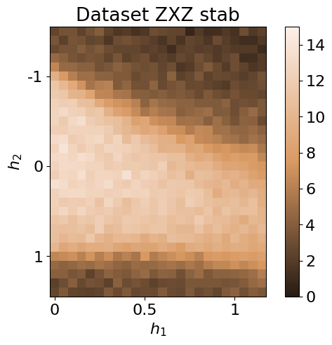
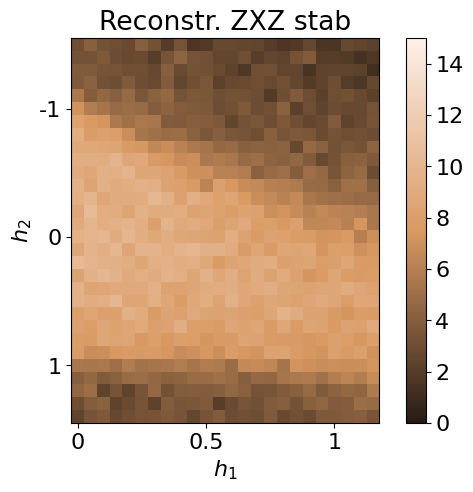
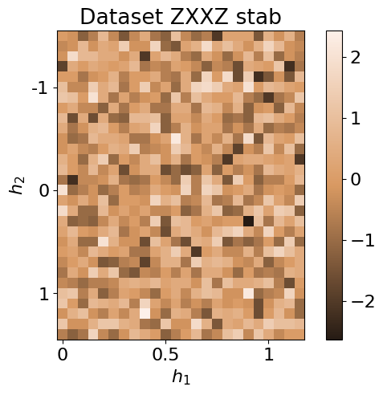
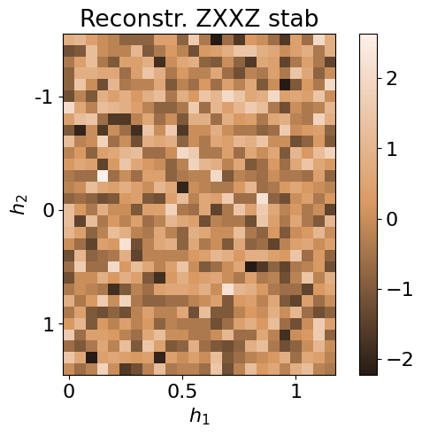
data['stabilizers'] = {}
data['stabilizers']['dataset'] = stab_dataset
data['stabilizers']['recon'] = stab_reconwith open('clusterIsingN15_data_cpVAE2_QDisc.pkl', 'wb') as f:
pickle.dump(data, f)Symbolic regression
In this section, we employ QDisc.SR.SymbolicRegression to investigate the nature of the additional cluster observed in the latent representation. We will use the '2_body_correlator' ansatz with the SR1 objective.
## specifying the index of the cluster and the 'out' data ##
idx_add_cluster = jnp.array([[ 0, 21],
[ 0, 22],
[ 0, 23],
[ 0, 24],
[ 1, 21],
[ 1, 22],
[ 1, 23],
[ 2, 22]])
idx_add_cluster2 = jnp.array([[ 0, 17],
[ 0, 18],
[ 0, 19],
[ 0, 20],
[ 0, 21],
[ 0, 22],
[ 0, 23],
[ 0, 24],
[ 0, 25],
[ 0, 26],
[ 1, 17],
[ 1, 18],
[ 1, 19],
[ 1, 20],
[ 1, 21],
[ 1, 22],
[ 1, 23],
[ 1, 24],
[ 1, 25],
[ 2, 17],
[ 2, 18],
[ 2, 19],
[ 2, 20],
[ 2, 21],
[ 2, 22],
[ 2, 23],
[ 2, 24],
[ 3, 17],
[ 3, 18],
[ 3, 19],
[ 3, 20],
[ 3, 21],
[ 3, 22],
[ 3, 23],
[ 4, 17],
[ 4, 18],
[ 4, 19],
[ 4, 20],
[ 4, 21],
[ 4, 22],
[ 4, 23],
[ 5, 17],
[ 5, 18],
[ 5, 19],
[ 5, 20],
[ 5, 21],
[ 5, 22],
[ 6, 17],
[ 6, 18],
[ 6, 19],
[ 6, 20],
[ 6, 21],
[ 7, 17],
[ 7, 18],
[ 7, 19],
[ 7, 20],
[ 7, 21],
[ 8, 17],
[ 8, 18],
[ 8, 19],
[ 8, 20],
[ 9, 17],
[ 9, 18],
[ 9, 19],
[10, 18]])
array_add_cluster = jnp.zeros((len(all_h1),len(all_h2)))
for i,j in idx_add_cluster:
array_add_cluster = array_add_cluster.at[i,j].set(1)
for i,j in idx_add_cluster2:
array_add_cluster = array_add_cluster.at[i,j].add(1)
plt.rcParams['font.size'] = 16
plt.figure(figsize=(5,4),dpi=200)
plt.imshow(jnp.rot90(array_add_cluster ),cmap=cmap_blue)
plt.colorbar()
plt.title(r'add cluster id')
plt.xlabel(r'$h_1$')
plt.ylabel(r'$h_2$')
plt.xticks([0,10,20], [0,0.5,1])
plt.yticks([5,15,25], [-1,0,1])
plt.show()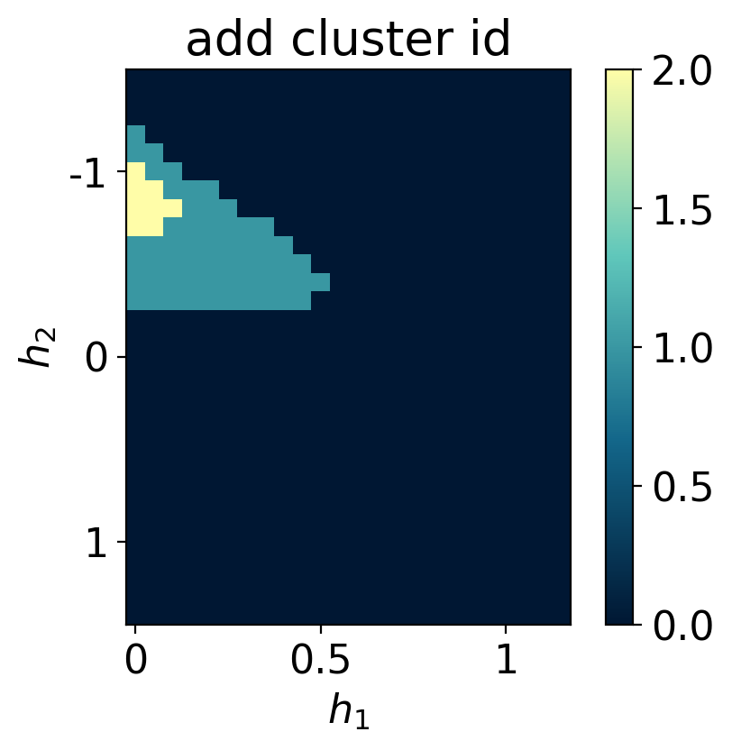
## try using only Z measurements ##
N = 15
all_h1 = jnp.arange(0.05, 1.25, 0.05)
all_h2 = jnp.arange(-1.5, 1.5, 0.1)
num_sample_per_params = 2000
data = jnp.zeros([jnp.size(all_h1), jnp.size(all_h2), num_sample_per_params, 2*N])
key = jax.random.PRNGKey(12345)
wave_fcts = data_exact['wave_fcts']
for i, h1 in enumerate(all_h1):
for j, h2 in enumerate(all_h2):
key, subkey = jax.random.split(key)
s = get_classical_shadow(psi=wave_fcts.astype('float32')[i,j], num_shots=num_sample_per_params, N=15, rng_key=subkey, bases='Z')
data = data.at[i,j].set(s)
data = data.astype('int32')[...,1::2]
dataset_onlyZ = Dataset(data=data, thetas=[all_h1, all_h2], data_type='shadow', local_dimension=2, local_states=jnp.array([0,1]))## 2BC with SR1 on just Z measurements ##
from qdisc.sr.core import SymbolicRegression
cluster_idx_out = jnp.argwhere(array_add_cluster == 0)
mySR = SymbolicRegression(dataset_onlyZ,
cluster_idx_in=idx_add_cluster,
cluster_idx_out=cluster_idx_out,
objective='SR1',
shift_data=False)
key = jax.random.PRNGKey(7654)
modelSR1 = mySR.train_2BC(key, dataset_size=10000)
## plot the alpha ##
topology = [[i for i in range(N)]]
mySR.plot_alpha(topology=topology, edge_scale=5, name='SR1')
## plot the prediction ##
p = mySR.compute_and_plot_prediction(name='SR1')## try using only X measurements ##
N = 15
all_h1 = jnp.arange(0.05, 1.25, 0.05)
all_h2 = jnp.arange(-1.5, 1.5, 0.1)
num_sample_per_params = 2000
data = jnp.zeros([jnp.size(all_h1), jnp.size(all_h2), num_sample_per_params, 2*N])
key = jax.random.PRNGKey(12345)
wave_fcts = data_exact['wave_fcts']
for i, h1 in enumerate(all_h1):
for j, h2 in enumerate(all_h2):
key, subkey = jax.random.split(key)
s = get_classical_shadow(psi=wave_fcts.astype('float32')[i,j], num_shots=num_sample_per_params, N=15, rng_key=subkey, bases='X')
data = data.at[i,j].set(s)
data = data.astype('int32')[...,1::2]
dataset_onlyX = Dataset(data=data, thetas=[all_h1, all_h2], data_type='shadow', local_dimension=2, local_states=jnp.array([0,1]))## 2BC ansatz with SR1 on just X measurements ##
cluster_idx_out = jnp.argwhere(array_add_cluster == 0)
mySR = SymbolicRegression(dataset_onlyX,
cluster_idx_in=idx_add_cluster,
cluster_idx_out=cluster_idx_out,
objective='SR1',
shift_data=False)
key = jax.random.PRNGKey(7654)
modelSR1 = mySR.train_2BC(key, dataset_size=10000)
## plot the alpha ##
topology = [[i for i in range(N)]]
mySR.plot_alpha(topology=topology, edge_scale=5, name='SR1')
## plot the prediction ##
p = mySR.compute_and_plot_prediction(name='SR1')### Start preparing the dataset ###
### Dataset prepared, start the trainnig ###
### Training finished ###
message: CONVERGENCE: NORM OF PROJECTED GRADIENT <= PGTOL
success: True
status: 0
fun: 0.5106711659251788
x: [ 1.540e+00 3.770e-02 ... 2.136e-01 1.452e+00]
nit: 55
jac: [ 2.176e-06 2.887e-06 ... 1.443e-06 6.439e-07]
nfev: 6678
njev: 63
hess_inv: <105x105 LbfgsInvHessProduct with dtype=float64>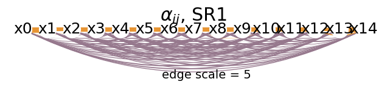
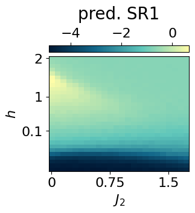
alpha_ij = mySR.model.alpha
alpha_ijarray([ 1.53990705, 0.03770259, -0.04346825, -0.13149565, -0.20346243,
-0.216187 , -0.12516161, -0.23463057, -0.14797347, -0.16969701,
-0.01672046, -0.26892908, -0.251428 , -0.18952416, 0.90347631,
-0.07494612, -0.16222789, -0.29326692, -0.17400529, -0.26595568,
-0.12645806, -0.2897381 , -0.16483247, -0.27759441, -0.1555185 ,
-0.16111236, -0.16457265, 1.06849548, -0.24298301, -0.14912591,
-0.24760999, -0.27366484, -0.23243181, -0.16129378, -0.11605931,
-0.27185235, -0.19379922, -0.1133317 , -0.25916324, 1.05848648,
-0.16312015, -0.21815877, -0.14621403, -0.29572144, -0.15435303,
-0.29049595, -0.33689923, -0.14333938, -0.17874212, -0.12713576,
1.15864417, -0.17555103, -0.11184462, -0.2233854 , -0.11609519,
-0.40802327, -0.16249469, -0.26187147, -0.1974241 , -0.19273916,
1.04689131, -0.18818199, -0.08297489, -0.2684967 , -0.21047272,
-0.27824555, -0.07299964, -0.13854064, -0.16618549, 1.0737933 ,
-0.23992408, -0.15637794, -0.15867473, -0.0993864 , -0.26412637,
-0.07127817, -0.18548937, 1.0084792 , -0.17280045, 0.05488786,
-0.02439849, -0.34237022, -0.14169306, -0.24500431, 1.07123984,
-0.13488342, -0.21586478, -0.18640315, -0.24594356, -0.04409138,
1.06001665, -0.26047844, -0.0571735 , -0.24347058, -0.12175681,
1.12084896, -0.3204326 , -0.16197169, -0.25358765, 1.18735147,
-0.19385288, -0.14679398, 0.76954958, 0.21358879, 1.45176713])we can further reduce the form of \(f(x)\) by mapping the 2 body weights \(\alpha_{ij}\) to a compact analytical formula. This can be done using the reduce_alpha() method.
g = mySR.reduce_alpha(random_state = 5732)PySRRegressor imported/usr/local/lib/python3.12/dist-packages/pysr/sr.py:2811: UserWarning: Note: it looks like you are running in Jupyter. The progress bar will be turned off.
warnings.warn(
[ Info: Started!
Expressions evaluated per second: 6.080e+04
Progress: 319 / 6200 total iterations (5.145%)
════════════════════════════════════════════════════════════════════════════════════════════════════
───────────────────────────────────────────────────────────────────────────────────────────────────
Complexity Loss Score Equation
1 2.035e-01 0.000e+00 y = -0.0070507
3 1.909e-01 3.189e-02 y = 0.63834 / x₁
5 1.358e-01 1.702e-01 y = 0.57163 / (x₁ - x₀)
7 2.778e-02 7.935e-01 y = -0.20651 / ((x₁ - x₀) + -1.1858)
9 1.197e-02 4.208e-01 y = (-0.14197 / (0.89362 - (x₁ - x₀))) + -0.22225
19 1.191e-02 4.953e-04 y = ((x₁ / (x₁ * ((((x₁ - 1.1846) - (x₀ - x₁)) - 0.61262) ...
- x₀))) * 0.26971) - 0.22255
───────────────────────────────────────────────────────────────────────────────────────────────────
════════════════════════════════════════════════════════════════════════════════════════════════════
Press 'q' and then <enter> to stop execution early.
Expressions evaluated per second: 6.010e+04
Progress: 694 / 6200 total iterations (11.194%)
════════════════════════════════════════════════════════════════════════════════════════════════════
───────────────────────────────────────────────────────────────────────────────────────────────────
Complexity Loss Score Equation
1 2.035e-01 0.000e+00 y = -0.0070507
3 1.909e-01 3.189e-02 y = 0.63834 / x₁
5 1.357e-01 1.705e-01 y = -0.59076 / (x₀ - x₁)
7 2.778e-02 7.932e-01 y = -0.20651 / ((x₁ - x₀) + -1.1858)
9 1.170e-02 4.324e-01 y = (-0.087259 / (0.93359 - (x₁ - x₀))) + -0.20745
15 1.143e-02 3.890e-03 y = ((-0.035063 / (0.97307 - (x₁ - x₀))) + -0.21702) - (-0...
.026586 / (x₀ - -0.34569))
───────────────────────────────────────────────────────────────────────────────────────────────────
════════════════════════════════════════════════════════════════════════════════════════════════════
Press 'q' and then <enter> to stop execution early.
Expressions evaluated per second: 7.340e+04
Progress: 1210 / 6200 total iterations (19.516%)
════════════════════════════════════════════════════════════════════════════════════════════════════
───────────────────────────────────────────────────────────────────────────────────────────────────
Complexity Loss Score Equation
1 2.035e-01 0.000e+00 y = -0.0070507
3 1.909e-01 3.189e-02 y = 0.63834 / x₁
5 1.357e-01 1.705e-01 y = -0.59076 / (x₀ - x₁)
7 2.778e-02 7.932e-01 y = -0.20686 / ((x₁ + -1.1859) - x₀)
9 1.168e-02 4.332e-01 y = (-0.070531 / (0.94634 - (x₁ - x₀))) + -0.20238
11 1.168e-02 6.703e-05 y = ((0.44765 / (0.94717 - (x₁ - x₀))) * -0.15478) + -0.20...
168
13 1.071e-02 4.346e-02 y = (-0.11097 / ((0.91048 - (x₁ - x₀)) + (0.022285 / x₁)))...
- 0.21383
15 1.029e-02 1.995e-02 y = ((-0.12132 / (0.90642 - (x₁ - x₀))) + (0.38011 / (x₁ *...
x₁))) + -0.22749
17 9.572e-03 3.606e-02 y = (-0.11953 / (0.90714 - (x₁ - x₀))) + ((0.078487 / ((0....
19978 - x₀) * x₁)) + -0.22525)
19 9.415e-03 8.301e-03 y = ((-0.12599 / (0.90378 - (x₁ - x₀))) + ((-0.22172 / (x₁...
* (x₀ - 0.57073))) / x₁)) - 0.21898
21 9.313e-03 5.413e-03 y = ((-0.10962 / (0.91595 - (x₁ - x₀))) + ((-0.18398 / ((x...
₁ * x₀) - 0.57641)) / (x₁ + -0.2413))) - 0.22248
23 9.221e-03 4.986e-03 y = ((-0.18437 / ((x₀ * (x₁ * 0.6088)) - 0.57172)) / (x₁ +...
-0.24692)) + ((-0.11029 / (0.916 - (x₁ - x₀))) - 0.22135)
25 9.214e-03 3.672e-04 y = ((-0.11045 / (0.91633 - (x₁ - x₀))) + ((-0.24069 / (((...
x₁ * x₀) / -0.70687) - -0.707)) / (x₀ - (x₁ + -0.2411)))) ...
- 0.22194
───────────────────────────────────────────────────────────────────────────────────────────────────
════════════════════════════════════════════════════════════════════════════════════════════════════
Press 'q' and then <enter> to stop execution early.
Expressions evaluated per second: 8.140e+04
Progress: 1757 / 6200 total iterations (28.339%)
════════════════════════════════════════════════════════════════════════════════════════════════════
───────────────────────────────────────────────────────────────────────────────────────────────────
Complexity Loss Score Equation
1 2.035e-01 0.000e+00 y = -0.0070507
3 1.909e-01 3.189e-02 y = 0.63834 / x₁
5 1.357e-01 1.705e-01 y = -0.59076 / (x₀ - x₁)
7 2.778e-02 7.932e-01 y = -0.20687 / (x₁ + (-1.1859 - x₀))
9 1.168e-02 4.332e-01 y = (-0.070531 / (0.94634 - (x₁ - x₀))) + -0.20238
11 1.168e-02 6.703e-05 y = ((0.44765 / (0.94717 - (x₁ - x₀))) * -0.15478) + -0.20...
168
13 1.071e-02 4.347e-02 y = (-0.11094 / (((0.022242 / x₁) + 0.91038) - (x₁ - x₀)))...
- 0.21384
15 1.027e-02 2.093e-02 y = (-0.11646 / ((0.90857 - (x₁ - x₀)) + (0.02394 / (x₁ * ...
x₁)))) - 0.21942
17 9.563e-03 3.555e-02 y = (-0.13043 / (0.90043 - (x₁ - x₀))) + ((-0.080147 / (x₁...
* (x₀ + -0.20308))) - 0.22673)
19 9.362e-03 1.060e-02 y = ((-0.2884 / ((x₀ - 0.56878) * x₁)) / x₁) + ((-0.12642 ...
/ (0.90323 - (x₁ - x₀))) - 0.21861)
21 9.301e-03 3.307e-03 y = ((-0.10962 / (0.91595 - (x₁ - x₀))) + ((-0.18398 / ((x...
₁ * x₀) - 0.57641)) / (x₁ + -0.29705))) - 0.22248
23 9.220e-03 4.358e-03 y = (-0.10962 / (0.91595 - (x₁ - x₀))) + (((-0.18398 / ((x...
₁ * x₀) - 0.57641)) / ((x₁ - x₀) + -0.2413)) - 0.22248)
25 9.183e-03 1.991e-03 y = (((-0.24069 / (((x₁ * x₀) / -0.80273) - -0.76212)) / (...
x₀ - (x₁ + -0.2411))) + (-0.11045 / (0.91633 - (x₁ - x₀)))...
) - 0.22194
───────────────────────────────────────────────────────────────────────────────────────────────────
════════════════════════════════════════════════════════════════════════════════════════════════════
Press 'q' and then <enter> to stop execution early.
Expressions evaluated per second: 8.590e+04
Progress: 2272 / 6200 total iterations (36.645%)
════════════════════════════════════════════════════════════════════════════════════════════════════
───────────────────────────────────────────────────────────────────────────────────────────────────
Complexity Loss Score Equation
1 2.035e-01 0.000e+00 y = -0.0070507
3 1.909e-01 3.189e-02 y = 0.63864 / x₁
5 1.357e-01 1.705e-01 y = -0.59076 / (x₀ - x₁)
7 2.778e-02 7.932e-01 y = -0.20687 / (x₁ + (-1.1859 - x₀))
9 1.168e-02 4.333e-01 y = (-0.070507 / (0.94622 - (x₁ - x₀))) + -0.20238
13 1.071e-02 2.173e-02 y = (-0.11094 / (((0.022242 / x₁) + 0.91038) - (x₁ - x₀)))...
- 0.21384
15 1.027e-02 2.093e-02 y = (-0.11646 / ((0.90857 - (x₁ - x₀)) + (0.02394 / (x₁ * ...
x₁)))) - 0.21942
17 9.501e-03 3.882e-02 y = (-0.16832 / (x₁ * (x₀ - 0.4115))) + ((-0.10962 / (0.91...
595 - (x₁ - x₀))) - 0.22248)
19 9.358e-03 7.580e-03 y = (((-0.18398 / (x₁ * (x₀ - 0.4115))) / x₁) - 0.22248) +...
(-0.10962 / (0.91595 - (x₁ - x₀)))
21 9.279e-03 4.203e-03 y = (-0.10962 / (0.91595 - (x₁ - x₀))) + (((-0.18398 / ((x...
₁ - x₀) * (x₀ - 0.4115))) / x₁) - 0.22248)
23 9.186e-03 5.073e-03 y = (-0.11036 / (0.9167 - (x₁ - x₀))) + (((-0.18398 / ((x₁...
* x₀) - 0.57641)) / (x₁ + (-0.27416 - x₀))) - 0.22238)
25 9.167e-03 9.969e-04 y = (-0.11036 / (0.9167 - (x₁ - x₀))) + (((-0.18398 / ((x₁...
* x₀) - 0.63347)) / (x₁ + ((-0.18289 - 0.151) - x₀))) - 0...
.22238)
───────────────────────────────────────────────────────────────────────────────────────────────────
════════════════════════════════════════════════════════════════════════════════════════════════════
Press 'q' and then <enter> to stop execution early.
Expressions evaluated per second: 9.520e+04
Progress: 2806 / 6200 total iterations (45.258%)
════════════════════════════════════════════════════════════════════════════════════════════════════
───────────────────────────────────────────────────────────────────────────────────────────────────
Complexity Loss Score Equation
1 2.035e-01 0.000e+00 y = -0.0070507
3 1.909e-01 3.189e-02 y = 0.63864 / x₁
5 1.357e-01 1.705e-01 y = -0.59076 / (x₀ - x₁)
7 2.778e-02 7.932e-01 y = -0.20687 / (x₁ + (-1.1859 - x₀))
9 1.168e-02 4.333e-01 y = (-0.070507 / (0.94622 - (x₁ - x₀))) + -0.20238
13 1.063e-02 2.361e-02 y = (-0.083855 / ((0.015808 / x₁) + (0.93208 - (x₁ - x₀)))...
) + -0.20815
15 1.024e-02 1.861e-02 y = ((-0.10962 / (0.91595 - (x₁ - x₀))) + ((0.39086 / x₁) ...
/ x₁)) - 0.22248
17 9.429e-03 4.116e-02 y = ((-0.11036 / (0.9167 - (x₁ - x₀))) + ((-0.13326 / x₁) ...
/ (x₀ + -0.32639))) - 0.22238
19 9.328e-03 5.427e-03 y = (-0.19149 / ((x₀ - 0.41169) * (x₁ * x₁))) + ((-0.11311...
/ (0.9128 - (x₁ - x₀))) - 0.21693)
21 9.255e-03 3.892e-03 y = ((-0.18405 / ((x₀ - 0.41169) * (x₁ * (x₁ - x₀)))) + (-...
0.11311 / (0.9128 - (x₁ - x₀)))) - 0.21693
23 9.167e-03 4.784e-03 y = (-0.11036 / (0.9167 - (x₁ - x₀))) + (((-0.18398 / ((x₁...
* x₀) - 0.63347)) / (x₁ + (-0.32639 - x₀))) - 0.22238)
───────────────────────────────────────────────────────────────────────────────────────────────────
════════════════════════════════════════════════════════════════════════════════════════════════════
Press 'q' and then <enter> to stop execution early.
Expressions evaluated per second: 9.050e+04
Progress: 3224 / 6200 total iterations (52.000%)
════════════════════════════════════════════════════════════════════════════════════════════════════
───────────────────────────────────────────────────────────────────────────────────────────────────
Complexity Loss Score Equation
1 2.035e-01 0.000e+00 y = -0.0070507
3 1.909e-01 3.189e-02 y = 0.63864 / x₁
5 1.357e-01 1.705e-01 y = -0.59076 / (x₀ - x₁)
7 2.778e-02 7.932e-01 y = -0.20656 / ((x₁ + -1.1857) - x₀)
9 1.168e-02 4.333e-01 y = (-0.070507 / (0.94622 - (x₁ - x₀))) + -0.20238
13 1.063e-02 2.361e-02 y = (-0.083855 / ((0.015808 / x₁) + (0.93208 - (x₁ - x₀)))...
) + -0.20815
15 1.024e-02 1.862e-02 y = (-0.10962 / (0.91595 - (x₁ - x₀))) + (((0.37674 / x₁) ...
/ x₁) - 0.22248)
17 9.410e-03 4.216e-02 y = (-0.11294 / (0.91371 - (x₁ - x₀))) + (((-0.11809 / x₁)...
/ (x₀ + -0.32599)) - 0.21897)
19 9.325e-03 4.581e-03 y = (-0.1942 / (((x₀ - 0.41169) * x₁) * x₁)) + ((-0.11311 ...
/ (0.9128 - (x₁ - x₀))) - 0.21693)
21 9.226e-03 5.292e-03 y = ((-0.1915 / ((x₀ - 0.41169) * (x₁ * (x₁ - x₀)))) + (-0...
.11356 / (0.91326 - (x₁ - x₀)))) - 0.21687
23 9.167e-03 3.249e-03 y = (((-0.18397 / ((x₁ * x₀) - 0.63347)) / ((x₁ + -0.32639...
) - x₀)) - 0.22237) + (-0.11032 / (0.91659 - (x₁ - x₀)))
25 9.129e-03 2.082e-03 y = (-0.11058 / (0.91677 - (x₁ - x₀))) + (((-0.18397 / ((x...
₁ * x₀) - 0.65149)) / ((x₁ - (x₀ / 0.93262)) + -0.31388)) ...
- 0.2223)
───────────────────────────────────────────────────────────────────────────────────────────────────
════════════════════════════════════════════════════════════════════════════════════════════════════
Press 'q' and then <enter> to stop execution early.
Expressions evaluated per second: 8.930e+04
Progress: 3762 / 6200 total iterations (60.677%)
════════════════════════════════════════════════════════════════════════════════════════════════════
───────────────────────────────────────────────────────────────────────────────────────────────────
Complexity Loss Score Equation
1 2.035e-01 0.000e+00 y = -0.0070507
3 1.909e-01 3.189e-02 y = 0.63864 / x₁
5 1.357e-01 1.705e-01 y = -0.59076 / (x₀ - x₁)
7 2.778e-02 7.932e-01 y = -0.20667 / ((x₁ + -1.1858) - x₀)
9 1.168e-02 4.333e-01 y = (-0.070507 / (0.94622 - (x₁ - x₀))) + -0.20238
13 1.062e-02 2.373e-02 y = (-0.085704 / (((0.016837 / x₁) - (x₁ - x₀)) + 0.93069)...
) + -0.20749
15 1.003e-02 2.884e-02 y = (0.06626 / (x₁ + -0.8544)) + ((-0.11243 / (0.9124 - (x...
₁ - x₀))) - 0.22761)
17 9.407e-03 3.186e-02 y = ((-0.11294 / (0.91371 - (x₁ - x₀))) + ((-0.11809 / x₁)...
/ (-0.31971 + x₀))) - 0.21897
19 9.325e-03 4.413e-03 y = (-0.11311 / (0.9128 - (x₁ - x₀))) + ((-0.1942 / ((x₁ *...
x₁) * (x₀ - 0.41169))) - 0.21693)
21 9.226e-03 5.292e-03 y = ((-0.1915 / ((x₀ - 0.41169) * (x₁ * (x₁ - x₀)))) + (-0...
.11356 / (0.91326 - (x₁ - x₀)))) - 0.21687
23 9.167e-03 3.249e-03 y = (((-0.18397 / ((x₁ * x₀) - 0.63347)) / ((x₁ + -0.32639...
) - x₀)) - 0.22237) + (-0.11032 / (0.91659 - (x₁ - x₀)))
25 8.044e-03 6.535e-02 y = (-0.11313 / (0.91633 - (x₁ - x₀))) + (((-0.18553 / ((x...
₀ * x₁) - 0.65126)) / ((x₁ + -0.1135) - (x₀ / 0.93144))) -...
0.22113)
───────────────────────────────────────────────────────────────────────────────────────────────────
════════════════════════════════════════════════════════════════════════════════════════════════════
Press 'q' and then <enter> to stop execution early.
Expressions evaluated per second: 9.210e+04
Progress: 4258 / 6200 total iterations (68.677%)
════════════════════════════════════════════════════════════════════════════════════════════════════
───────────────────────────────────────────────────────────────────────────────────────────────────
Complexity Loss Score Equation
1 2.035e-01 0.000e+00 y = -0.0070507
3 1.909e-01 3.189e-02 y = 0.63864 / x₁
5 1.357e-01 1.705e-01 y = -0.59076 / (x₀ - x₁)
7 2.778e-02 7.932e-01 y = -0.20667 / ((x₁ + -1.1858) - x₀)
9 1.168e-02 4.333e-01 y = (-0.070507 / (0.94622 - (x₁ - x₀))) + -0.20238
13 1.062e-02 2.373e-02 y = (-0.085704 / ((0.016837 / x₁) - (x₁ - (0.93069 + x₀)))...
) + -0.20749
15 1.002e-02 2.907e-02 y = (0.06626 / (x₁ + -0.8544)) + ((-0.11243 / (0.9128 - (x...
₁ - x₀))) - 0.22761)
17 9.407e-03 3.163e-02 y = ((-0.11294 / (0.91371 - (x₁ - x₀))) + ((-0.11809 / x₁)...
/ (-0.31971 + x₀))) - 0.21897
19 9.199e-03 1.117e-02 y = ((-0.26978 / ((x₁ * x₁) * (x₀ - 0.56967))) + (-0.08713...
3 / (0.93283 - (x₁ - x₀)))) - 0.21323
21 9.153e-03 2.506e-03 y = (-0.26978 / (x₁ * ((x₁ * (x₀ - 0.10441)) - 0.56967))) ...
+ ((-0.087133 / (0.93283 - (x₁ - x₀))) - 0.21323)
23 9.146e-03 4.010e-04 y = (-0.26978 / (x₁ * (((0.10441 - x₀) * (x₁ / -1.0391)) -...
0.56967))) + ((-0.087133 / (0.93283 - (x₁ - x₀))) - 0.213...
23)
25 8.039e-03 6.454e-02 y = (-0.11313 / (0.91633 - (x₁ - x₀))) + (((-0.18553 / ((x...
₀ * x₁) - 0.64223)) / (x₁ + (-0.1135 - (x₀ / 0.93144)))) -...
0.22113)
───────────────────────────────────────────────────────────────────────────────────────────────────
════════════════════════════════════════════════════════════════════════════════════════════════════
Press 'q' and then <enter> to stop execution early.
Expressions evaluated per second: 8.990e+04
Progress: 4735 / 6200 total iterations (76.371%)
════════════════════════════════════════════════════════════════════════════════════════════════════
───────────────────────────────────────────────────────────────────────────────────────────────────
Complexity Loss Score Equation
1 2.035e-01 0.000e+00 y = -0.0070507
3 1.909e-01 3.189e-02 y = 0.63864 / x₁
5 1.357e-01 1.705e-01 y = -0.59076 / (x₀ - x₁)
7 2.778e-02 7.932e-01 y = -0.20667 / ((x₁ + -1.1858) - x₀)
9 1.168e-02 4.333e-01 y = (-0.070507 / (0.94622 - (x₁ - x₀))) + -0.20238
13 1.062e-02 2.373e-02 y = (-0.085704 / ((0.016837 / x₁) - (x₁ - (0.93069 + x₀)))...
) + -0.20749
15 1.002e-02 2.907e-02 y = (-0.11243 / (0.9128 - (x₁ - x₀))) + ((0.06626 / (x₁ + ...
-0.8544)) - 0.22761)
17 9.407e-03 3.163e-02 y = ((-0.11294 / (0.91371 - (x₁ - x₀))) + ((-0.11809 / x₁)...
/ (-0.31971 + x₀))) - 0.21897
19 9.192e-03 1.158e-02 y = (-0.26974 / ((x₁ * x₁) * (x₀ - 0.56955))) + ((-0.09457...
1 / (0.92708 - (x₁ - x₀))) - 0.20873)
21 9.138e-03 2.915e-03 y = (-0.087696 / (0.93245 - (x₁ - x₀))) + ((-0.26983 / (x₁...
* ((x₁ * (x₀ - 0.1044)) - 0.50378))) - 0.21311)
23 9.091e-03 2.616e-03 y = ((-0.087768 / (0.93267 - (x₁ - x₀))) - 0.21311) + (-0....
26983 / (((((x₀ - 0.1044) * x₁) - 0.50378) * x₁) - x₀))
25 7.990e-03 6.453e-02 y = (-0.11313 / (0.91633 - (x₁ - x₀))) + (((-0.18553 / ((x...
₀ * x₁) - 0.61863)) / (((x₁ + -0.11303) * 0.93143) - x₀)) ...
- 0.22113)
───────────────────────────────────────────────────────────────────────────────────────────────────
════════════════════════════════════════════════════════════════════════════════════════════════════
Press 'q' and then <enter> to stop execution early.[ Info: Final population:
[ Info: Results saved to:
Expressions evaluated per second: 9.130e+04
Progress: 5253 / 6200 total iterations (84.726%)
════════════════════════════════════════════════════════════════════════════════════════════════════
───────────────────────────────────────────────────────────────────────────────────────────────────
Complexity Loss Score Equation
1 2.035e-01 0.000e+00 y = -0.0070507
3 1.909e-01 3.189e-02 y = 0.63864 / x₁
5 1.357e-01 1.705e-01 y = -0.59076 / (x₀ - x₁)
7 2.778e-02 7.932e-01 y = -0.20667 / ((x₁ + -1.1858) - x₀)
9 1.168e-02 4.333e-01 y = (-0.070507 / (0.94622 - (x₁ - x₀))) + -0.20238
13 1.062e-02 2.373e-02 y = (-0.085704 / ((0.016837 / x₁) - (x₁ - (0.93069 + x₀)))...
) + -0.20749
15 9.731e-03 4.376e-02 y = (-0.13525 / ((0.011703 / (0.53637 - x₀)) - (x₁ - (x₀ +...
0.89961)))) + -0.22209
17 9.407e-03 1.694e-02 y = ((-0.11294 / (0.91371 - (x₁ - x₀))) + ((-0.11809 / x₁)...
/ (-0.31971 + x₀))) - 0.21897
19 9.192e-03 1.158e-02 y = (-0.26974 / ((x₁ * x₁) * (x₀ - 0.56955))) + ((-0.09457...
1 / (0.92708 - (x₁ - x₀))) - 0.20873)
21 9.101e-03 4.970e-03 y = (-0.05641 / (0.95622 - (x₁ - x₀))) + ((-0.24991 / (x₁ ...
* ((x₁ * (x₀ - 0.12718)) - 0.4419))) - 0.20414)
23 9.081e-03 1.120e-03 y = (-0.26294 / ((((x₀ - 0.1044) * x₁) - 0.48882) * (x₁ - ...
x₀))) + ((-0.088192 / (0.93288 - (x₁ - x₀))) - 0.21305)
25 7.990e-03 6.398e-02 y = (-0.11313 / (0.91633 - (x₁ - x₀))) + (((-0.18553 / ((x...
₁ * x₀) - 0.61863)) / (((x₁ + -0.11303) * 0.93143) - x₀)) ...
- 0.22113)
───────────────────────────────────────────────────────────────────────────────────────────────────
════════════════════════════════════════════════════════════════════════════════════════════════════
Press 'q' and then <enter> to stop execution early.
Expressions evaluated per second: 9.160e+04
Progress: 5683 / 6200 total iterations (91.661%)
════════════════════════════════════════════════════════════════════════════════════════════════════
───────────────────────────────────────────────────────────────────────────────────────────────────
Complexity Loss Score Equation
1 2.035e-01 0.000e+00 y = -0.0070507
3 1.909e-01 3.189e-02 y = 0.63864 / x₁
5 1.357e-01 1.705e-01 y = -0.59076 / (x₀ - x₁)
7 2.778e-02 7.932e-01 y = -0.20667 / ((x₁ + -1.1858) - x₀)
9 1.168e-02 4.333e-01 y = (-0.070507 / (0.94622 - (x₁ - x₀))) + -0.20238
13 1.062e-02 2.373e-02 y = (-0.085704 / ((0.016837 / x₁) - (x₁ - (0.93069 + x₀)))...
) + -0.20749
15 9.731e-03 4.376e-02 y = (-0.13525 / ((0.011703 / (0.53637 - x₀)) - (x₁ - (x₀ +...
0.89961)))) + -0.22209
17 9.407e-03 1.694e-02 y = ((-0.11294 / (0.91371 - (x₁ - x₀))) + ((-0.11809 / x₁)...
/ (-0.31971 + x₀))) - 0.21897
19 9.186e-03 1.191e-02 y = ((-0.07979 / (0.93826 - (x₁ - x₀))) + (-0.24638 / ((x₀...
- 0.46991) * (x₁ * x₁)))) - 0.20701
21 9.101e-03 4.639e-03 y = (-0.05641 / (0.95622 - (x₁ - x₀))) + ((-0.24991 / (x₁ ...
* ((x₁ * (x₀ - 0.12718)) - 0.4419))) - 0.20414)
23 9.036e-03 3.609e-03 y = (-0.06851 / (0.94731 - (x₁ - x₀))) + ((-0.24973 / (((x...
₁ * (x₀ - 0.12721)) - 0.44186) * (x₁ - x₀))) - 0.20444)
25 7.990e-03 6.150e-02 y = (-0.11313 / (0.91633 - (x₁ - x₀))) + (((-0.18553 / ((x...
₁ * x₀) - 0.61863)) / (((x₁ + -0.11303) * 0.93143) - x₀)) ...
- 0.22153)
───────────────────────────────────────────────────────────────────────────────────────────────────
════════════════════════════════════════════════════════════════════════════════════════════════════
Press 'q' and then <enter> to stop execution early.
───────────────────────────────────────────────────────────────────────────────────────────────────
Complexity Loss Score Equation
1 2.035e-01 0.000e+00 y = -0.0070507
3 1.909e-01 3.189e-02 y = 0.63864 / x₁
5 1.357e-01 1.705e-01 y = -0.59076 / (x₀ - x₁)
7 2.778e-02 7.932e-01 y = -0.20667 / ((x₁ + -1.1858) - x₀)
9 1.168e-02 4.333e-01 y = (-0.070507 / (0.94622 - (x₁ - x₀))) + -0.20238
13 1.062e-02 2.373e-02 y = (-0.085704 / ((0.016837 / x₁) - (x₁ - (0.93069 + x₀)))...
) + -0.20749
15 9.622e-03 4.942e-02 y = (-0.11294 / (0.91371 + ((-0.0070755 / (x₀ + -0.31971))...
- (x₁ - x₀)))) - 0.21897
17 9.405e-03 1.138e-02 y = (-0.11294 / (0.91371 - (x₁ - x₀))) + (((-0.11809 / x₁)...
/ (-0.30834 + x₀)) - 0.21897)
19 9.158e-03 1.333e-02 y = (-0.073248 / (0.94322 - (x₁ - x₀))) + ((-0.25118 / (x₁...
* (x₁ * (x₀ - 0.56259)))) - 0.20514)
21 9.101e-03 3.125e-03 y = (-0.05641 / (0.95622 - (x₁ - x₀))) + ((-0.24991 / (x₁ ...
* ((x₁ * (x₀ - 0.12718)) - 0.4419))) - 0.20414)
23 9.036e-03 3.609e-03 y = (-0.06851 / (0.94731 - (x₁ - x₀))) + ((-0.24973 / (((x...
₁ * (x₀ - 0.12721)) - 0.44186) * (x₁ - x₀))) - 0.20444)
25 7.990e-03 6.150e-02 y = (-0.11313 / (0.91633 - (x₁ - x₀))) + (((-0.18553 / ((x...
₁ * x₀) - 0.61863)) / (((x₁ + -0.11303) * 0.93143) - x₀)) ...
- 0.22153)
───────────────────────────────────────────────────────────────────────────────────────────────────
- outputs/20260217_134546_I5vzzY/hall_of_fame.csvprint(g)(-0.20237744*x0 + 0.20237744*x1 - 0.261999786885912)/(x0 - x1 + 0.94621605)